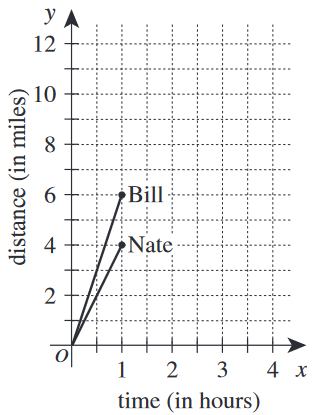

Bill and Nate are participating in a fund-raising event in which they run or walk a distance of 30 miles. A graph representing their progress during the first hour is shown in the standard \((x,y)\) coordinate plane below.

Assume that Bill continues to travel at the same speed until he reaches the finish line. One of the following phrases describes how Nate will need to change his average speed for the remainder of the event in order to finish at exactly the same time as Bill. Which one?